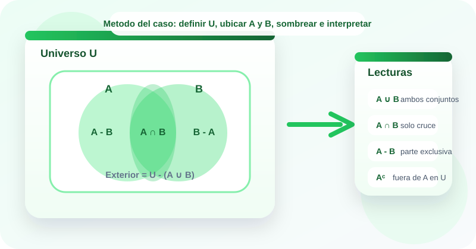

Casos guiados
Estudio de casos
Diagramas de Venn
🟢 Los diagramas de Venn permiten ver con claridad qué elementos pertenecen a un conjunto, cuáles coinciden entre varios grupos y cuáles quedan por fuera.
En desarrollo de software se usan al comparar usuarios con distintos permisos, módulos compartidos entre equipos o registros que cumplen varias condiciones. Un diagrama de Venn ayuda a pasar de una lista abstracta a una representación visual donde se distinguen unión, intersección, diferencia y complemento.
Este OVA usa la metodología de estudio de casos para que identifiques el universo, reconozcas los conjuntos del problema, ubiques la región correcta del diagrama y expliques el significado del sombreado dentro del contexto.

Objetivos de aprendizaje
- 🧠 Reconocer la estructura de un diagrama de Venn: universo, conjuntos y regiones de cruce o exclusión.
- 🎨 Interpretar qué región debe sombrearse cuando un caso describe unión, intersección, diferencia o complemento.
- 📊 Traducir información de listas o situaciones reales a diagramas de Venn para facilitar el análisis de pertenencia.
- 💻 Resolver casos del contexto de software usando diagramas para comparar grupos, detectar solapamientos y evidenciar faltantes.
- ✅ Justificar con lenguaje matemático y natural por qué una región del diagrama responde correctamente al problema planteado.
Contenido temático
Del sombreado visual a la interpretación del caso
El recurso se centra en leer situaciones, ubicar conjuntos y seleccionar la región correcta del diagrama de Venn.
Unión
Sombrea todo lo que pertenece a A, a B o a ambos conjuntos.
A ∪ B
Visualmente cubre ambas circunferencias completas.
Intersección
Sombrea solo la zona compartida entre los dos conjuntos.
A ∩ B
Muestra los elementos que cumplen simultáneamente ambas condiciones.
Diferencia
Sombrea la parte exclusiva de un conjunto, sin incluir el cruce.
A - B
Permite visualizar lo que queda cuando se excluyen coincidencias.
Complemento
Sombrea la región del universo que está fuera del conjunto analizado.
Aᶜ
Solo puede leerse correctamente si el universo está definido.
Universo
Es el rectángulo que contiene todos los elementos posibles del análisis.
U
Indica el contexto total dentro del cual se interpretan las regiones.
Actividades de práctica
Refuerza la lectura de diagramas de Venn mediante clasificación, selección de regiones, secuenciación y un laboratorio interactivo.
Actividad 1. Clasifica cada elemento del diagrama
Arrastra cada tarjeta hacia la categoría correcta.
Si estás en celular, toca una tarjeta y luego la zona de respuesta.
U = {todos los usuarios registrados}
A ∩ B
Zona compartida entre dos círculos
Aᶜ
Parte exclusiva de A
Rectángulo que contiene todos los elementos
A ∪ B
Exterior de A dentro de U
Universo
Región
Operación
Actividad 2. Relaciona el caso con la región correcta
Arrastra cada situación hacia la operación visual que mejor la representa.
Piensa si el caso pide reunir, coincidir, excluir o tomar lo que queda fuera.
Se necesita sombrear todo lo que pertenece a A o a B.
Solo interesa la zona común entre los dos conjuntos.
Se quieren los elementos que están en A pero no en B.
Se necesitan los elementos del universo que no pertenecen a A.
Hay que incluir ambas circunferencias completas en el sombreado.
La respuesta es la parte donde se superponen dos filtros.
Se elimina el cruce y se conserva solo la parte exclusiva de A.
La región buscada está fuera del conjunto, pero dentro del rectángulo U.
Unión
Intersección
Diferencia
Complemento
Actividad 3. Ordena la metodología del caso
Asigna del 1 al 5 el orden correcto para analizar un problema con diagramas de Venn.
Actividad 4. Completa los resultados del diagrama
Usa U = {1, 2, 3, 4, 5, 6}, A = {1, 2, 3, 4} y B = {3, 4, 5}. Selecciona la respuesta correcta en cada ejercicio.
| Ejercicio | Respuesta |
|---|---|
| A ∩ B | |
| A - B | |
| Aᶜ | |
| Exterior de A ∪ B |
Actividad 5. Laboratorio de diagramas de Venn
Ingresa tu propio universo y tus conjuntos. Luego genera la operación y revisa las regiones del diagrama: solo A, intersección, solo B y exterior.
Listo para analizar
Evaluación de comprensión
Responde el cuestionario para verificar tu dominio sobre universo, regiones y lectura de diagramas de Venn.
Recursos de apoyo
Antes de sombrear
Define claramente el universo y qué representa cada conjunto.
Durante el análisis
Pregúntate si el caso pide reunir, coincidir, excluir o tomar el exterior.
Después del sombreado
Traduce la región elegida a lenguaje natural para justificar la respuesta.
Hoja rápida de estudio
- El rectángulo representa el universo.
- La unión cubre ambos conjuntos completos.
- La intersección es solo la parte común.
- La diferencia conserva una parte exclusiva.
- El complemento toma lo que queda fuera de un conjunto dentro de U.
Bibliografía
Rosen, K. H. Matemáticas discretas y sus aplicaciones.
Epp, S. S. Matemática discreta con aplicaciones.
Grimaldi, R. P. Matemáticas discretas y combinatoria.
Materiales de aula de la asignatura Fundamentos Matemáticos del programa Tecnología en Desarrollo de Software.
Creado para:
Tecnología en Desarrollo de Software · Fundamentos Matemáticos